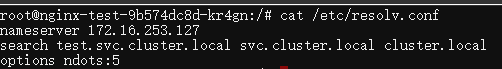
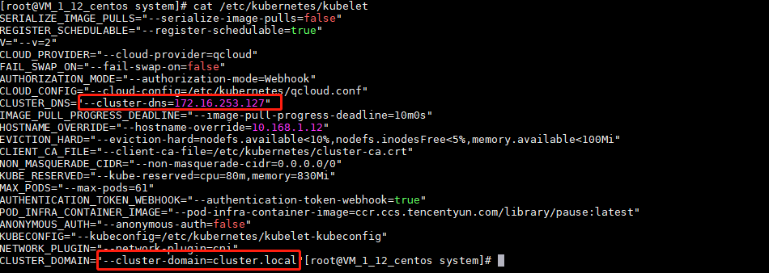

本篇文章主要介绍了k8s中dns如何解析和怎么使用dns服务。
coredns的原理和介绍 TKE集群中使用的DNS解析是采用coreDNS，Kubernetes1.11和更高版本中，CoreDNS位于GA并且默认情况下与kubeadm一起安装。

我们的每个容器下dns解析配置文件，都是通过kubelet来给容器进行配置。

kubelet 使用 —cluster-dns =标志将 DNS 传递到每个容器。
DNS 名称也需要域。 您可在kubelet中使用 —cluster-domain =标志配置本地域
coredns的配置文件 1 2 3 4 5 6 7 8 9 10 11 12 13 14 15 16 17 18 19 20 21 22 23 24 25 26 27 apiVersion: v1 data: Corefile: |2- .:53 { errors health kubernetes cluster.local. in-addr.arpa ip6.arpa { pods insecure upstream fallthrough in-addr.arpa ip6.arpa } prometheus :9153 proxy . /etc/resolv.conf cache 30 reload loadbalance } kind: ConfigMap metadata: creationTimestamp: "2020-06-02T03:16:59Z" labels: addonmanager.kubernetes.io/mode: EnsureExists name: coredns namespace: kube-system resourceVersion: "8573074315" selfLink: /api/v1/namespaces/kube-system/configmaps/coredns uid: 859ce588-a47f-11ea-8fe7-0a5ffefb2e9f
error：错误记录到 stdout。 health：CoreDNS 的健康报告给 http://localhost:8080/health。 kubernetes：CoreDNS 将基于 Kubernetes 的服务和 Pod 的 IP 答复 DNS 查询。 您可以在 此处.提供 pods insecure 选项是为了与 kube-dns 向前兼容。 您可以使用 pods verified 选项，该选项仅在相同名称空间中存在具有匹配 IP 的 pod 时才返回 A 记录。 如果您不使用 Pod 记录，则可以使用 pods disabled 选项 ‘Upstream’ 用来解析指向外部主机的服务（外部服务）。
prometheus：CoreDNS的度量标准以Prometheus格式在 http://localhost:9153/metrics 上提供。 proxy: 不在 Kubernetes 集群域内的任何查询都将转发到预定义的解析器 (/etc/resolv.conf). cache：这将启用前端缓存。 loop：检测到简单的转发循环，如果发现死循环，则中止 CoreDNS 进程。 reload：允许自动重新加载已更改的 Corefile。 编辑 ConfigMap 配置后，请等待两分钟，以使更改生效。 使用 CoreDN 配置存根域和上游域名服务器 CoreDNS 能够使用 proxy plugin. 配置存根域和上游域名服务器。
注意 ：k8s在1.18版本后，配置上游dns服务器采用的字段不在是proxy，而是采用的forword字段。
示例
如果集群操作员的 Consul 域服务器位于 10.150.0.1，并且所有 Consul 名称都带有后缀.consul.local。 要在 CoreDNS 中对其进行配置，集群管理员可以在 CoreDNS 的 ConfigMap 中创建加入以下字段。
1 2 3 4 5 consul.local:53 { errors cache 30 proxy . 10.150.0.1 }
要显式强制所有非集群 DNS 查找通过特定的域名服务器（位于172.16.0.1），请将 proxy 和 forward 指向域名服务器，而不是 /etc/resolv.conf。
最终的 ConfigMap 以及默认的 Corefile 配置如下所示：
1 2 3 4 5 6 7 8 9 10 11 12 13 14 15 16 17 18 19 20 21 22 23 24 25 26 27 apiVersion: v1 kind: ConfigMap metadata: name: coredns namespace: kube-system data: Corefile: | .:53 { errors health kubernetes cluster.local in-addr.arpa ip6.arpa { pods insecure upstream 172.16.0.1 fallthrough in-addr.arpa ip6.arpa } prometheus :9153 proxy . 172.16.0.1 cache 30 loop reload loadbalance } consul.local:53 { errors cache 30 proxy . 10.150.0.1 }
CoreDNS 不仅仅提供 kube-dns 的功能。 为 kube-dns 创建的 ConfigMap 支持 StubDomains 和 upstreamNameservers 转换为 CoreDNS 中的 proxy 插件。 同样，kube-dns 中的 Federations 插件会转换为 CoreDNS 中的 federation 插件。
示例
用于 kubedns 的此示例 ConfigMap 描述了 federations, stubdomains and upstreamnameservers：
1 2 3 4 5 6 7 8 9 apiVersion: v1data: federations: | {"foo" : "foo.feddomain.com" } stubDomains: | {"abc.com" : ["1.2.3.4" ], "my.cluster.local" : ["2.3.4.5" ]} upstreamNameservers: | ["8.8.8.8" , "8.8.4.4" ] kind: ConfigMap
CoreDNS 中的等效配置将创建一个 Corefile：
1 2 3 federation cluster.local { foo foo.feddomain .com }
1 2 3 4 5 6 7 8 9 10 abc.com:53 { errors cache 30 proxy . 1.2.3.4 } my.cluster.local:53 { errors cache 30 proxy . 2.3.4.5 }
带有默认插件的完整 Corefile：
1 2 3 4 5 6 7 8 9 10 11 12 13 14 15 16 17 18 19 20 21 22 23 24 25 .:53 { errors health kubernetes cluster.local in-addr.arpa ip6.arpa { upstream 8.8.8.8 8.8.4.4 pods insecure fallthrough in-addr.arpa ip6.arpa } federation cluster.local { foo foo.feddomain.com } prometheus :9153 proxy . 8.8.8.8 8.8.4.4 cache 30 } abc.com:53 { errors cache 30 proxy . 1.2.3.4 } my.cluster.local:53 { errors cache 30 proxy . 2.3.4.5 }
pod中coredns策略选择 在 kubernetes 中还提供了 dnsPolicy 决定 Pod 内预设 DNS 配置策略：
None 无任何策略 Default 默认 ClusterFirst 集群 DNS 优先 ClusterFirstWithHostNet 集群 DNS 优先，并伴随着使用宿主机网络 无策略 (None) 清除 Pod 预设 DNS 配置，当 dnsPolicy 设置成为这个值之后， kubernetes 不会为 Pod 预先加载任何逻辑用于判定得到 DNS 的配置。因此若将 dnsPolicy 设置为 None , 为了避免 Pod 里面没有 DNS 配置，最好通过 dnsConfig 来描述自定义的 DNS 参数。如下所示：
1 2 3 4 5 6 7 8 9 10 11 12 13 14 15 16 17 18 19 20 21 22 23 24 apiVersion : v1kind : Podmetadata : name : demo namespace : default spec : containers : - image : base/java command : - "java -jar /opt/app.jar" imagePullPolicy : IfNotPresent name : demo restartPolicy : Always dnsPolicy : None dnsConfig : nameservers : - 172 .xxx.xxx.201 searches : - ns1.svc.cluster.local - my.dns.search.suffix options : - name : ndots value : "2" - name : edns0
通过上述配置创建 Pod 之后，执行 kubectl exec demo cat /etc/resolv.conf 命令即可看到额外的配置项目，如下：
1 2 3 nameserver 172.xxx .xxx .201 search ns1 .svc .cluster .local my .dns .search .suffix options ndots :2 edns0
默认预设 (Default) Pod 里面的 DNS 配置继承了宿主机上的 DNS 配置。即，该 Pod 的 DNS 配置与宿主机完全一致。
1 2 3 4 5 6 7 8 9 10 11 12 13 14 apiVersion : v1kind : Podmetadata : name : demo namespace : default spec : containers : - image : base/java command : - "java -jar /opt/app.jar" imagePullPolicy : IfNotPresent name : demo restartPolicy : Always dnsPolicy : Default
通过 cat /etc/resolv.conf 可查看到宿主机上的配置如下：
1 2 3 4 # Dynamic resolv.conf(5 ) file for glibc resolver(3 ) generated by resolvconf(8 ) # DO NOT EDIT THIS FILE BY HAND -- YOUR CHANGES WILL BE OVERWRITTEN nameserver 172. xxx.xxx.201 nameserver 114.114 .114 .114
通过上述配置创建 Pod 之后，执行 kubectl exec demo cat /etc/resolv.conf 命令即可看到额外的配置项目，如下：
1 2 nameserver 172.xxx .xxx .201 nameserver 114.114 .114 .114
集群优先 (ClusterFirst) 与 Default 相反，会预先使用 kube-dns (或 CoreDNS ) 的信息当预设置参数写入到该 Pod 内的DNS配置。
1 2 3 4 5 6 7 8 9 10 11 12 13 14 apiVersion : v1kind : Podmetadata : name : demo namespace : default spec : containers : - image : base/java command : - "java -jar /opt/app.jar" imagePullPolicy : IfNotPresent name : demo restartPolicy : Always dnsPolicy : ClusterFirst
通过上述配置创建 Pod 之后，执行 kubectl exec demo cat /etc/resolv.conf 命令即可看到额外的配置项目，如下：
1 2 3 nameserver 10.20 .0 .2 search default .svc .cluster .local svc .cluster .local cluster .local options ndots :5
注 如设置了 hostNetwork = true 时，ClusterFirst 会被强制转化为 Default 。如下：
1 2 3 4 5 6 7 8 9 10 11 12 13 14 15 apiVersion: v1 kind: Pod metadata: name: demo namespace: default spec: containers: - image: base/java command: - "java -jar /opt/app.jar" imagePullPolicy: IfNotPresent name: demo hostNetwork: true restartPolicy: Always dnsPolicy: ClusterFirst
通过上述配置创建 Pod 之后，执行 kubectl exec demo cat /etc/resolv.conf 命令即可看到额外的配置项目，如下：
1 2 nameserver 172.xxx .xxx .201 nameserver 114.114 .114 .114
注 设置 hostNetwork = true 之后，会让 Pod 与该节点公用相同的网络空间(网卡/路由等)
宿主机与 Kubernetes 共存 ( ClusterFirstWithHostNet ) 同时使用 hostNetwork 与 kube-dns 作为 Pod 预设 DNS 配置。
1 2 3 4 5 6 7 8 9 10 11 12 13 14 15 apiVersion: v1 kind: Pod metadata: name: demo namespace: default spec: containers: - image: base/java command: - "java -jar /opt/app.jar" imagePullPolicy: IfNotPresent name: demo hostNetwork: true restartPolicy: Always dnsPolicy: ClusterFirstWithHostNet
通过上述配置创建 Pod 之后，执行 kubectl exec demo cat /etc/resolv.conf 命令即可看到额外的配置项目，如下：
1 2 3 nameserver 10.20 .0 .2 search default .svc .k8s .local . svc .k8s .local . k8s .local .options ndots :5
yaml文件中添加nameserver和search域 1 2 3 4 5 6 7 8 9 10 11 12 13 14 15 16 17 18 19 20 21 22 23 apiVersion : v1kind : Podmetadata : name : demo namespace : default spec : containers : - image : base/java command : - "java -jar /opt/app.jar" imagePullPolicy : IfNotPresent name : demo restartPolicy : Always dnsConfig : nameservers : - 172 .xxx.xxx.201 searches : - ns1.svc.cluster.local - my.dns.search.suffix options : - name : ndots value : "2" - name : edns0
通过上述配置创建 Pod 之后，执行 kubectl exec demo cat /etc/resolv.conf 命令即可看到额外的配置项目，如下：
1 2 3 4 nameserver 10.20 .0 .2 nameserver 172.xxx .xxx .201 search default .svc .cluster .local svc .cluster .local cluster .local ns1 .svc .cluster .local my .dns .search .suffix options ndots :2 edns0
欢迎访问 Vashon 的博客，博客和文章在完善中，请大家耐心等待。 若有问题或者有好的建议欢迎留言，笔者看到之后会及时回复。
为正常使用来必力评论功能请激活JavaScript